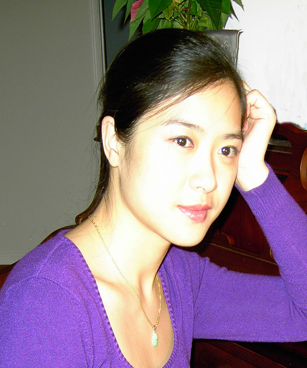

Welcome to My Writing Corner!
I’m Jantany Fleishman. I’ve loved reading and writing since childhood, with a special interest in mythology, science fiction, mysteries, detective adventures, and martial arts. Through this website, I share my stories, explore ideas, and reflect on the experiences that connect us. I’m also excited to introduce Unique, my first English-language novel and the first book in a new series. I invite you to join me on this creative journey!

Born into an artistic family, I grew up surrounded by art and music. After earning my bachelor’s degree in China, I became a piano teacher while nurturing my lifelong love of reading and writing. From an early age, I was drawn to fantastical worlds, mythology, science fiction, mystery, and martial arts stories. I began writing poems and short stories as a child, encouraged by my father, who always believed in my creative potential.
In 2005, I moved to the United States and later earned a master’s degree in Human Resource Management from the University of Maryland. While teaching piano, I also worked part-time as an editor for a local Maryland newspaper in 2006, gaining valuable experience in writing and editing. Later, I joined an intellectual property firm, where exposure to scientific innovation and emerging technologies sparked my interest in futuristic possibilities and the intersection of science and storytelling.
In 2021, I entered two poetry competitions in China under the pen name Moyan HUA, winning first prize in a local competition. In 2022, several of my poems were selected by China Writer and published in 《百家诗选》 (An Anthology of a Hundred Chinese Poets), released by Modern Press.
My journey as an English-language novelist took on a deeper meaning in 2023, when I lost my father after an illness. I was working on my first English-language novel, Unique, at the time. His passing strengthened my determination to finish the story he had encouraged me to pursue. After six years of writing and refining, I completed the novel in late 2025—a personal milestone and a tribute to his enduring belief in me.
Now, as I explore publishing opportunities for Unique, I continue to discover new possibilities in writing, from personal reflections and essays to imaginative stories that invite readers to see the world differently.
Through this website, I hope to share my creative journey, connect with readers and fellow writers, and build meaningful relationships with literary agents and publishers who share my passion for storytelling.
Thank you for visiting my little corner of the world.
I welcome thoughtful conversations and different points of view.